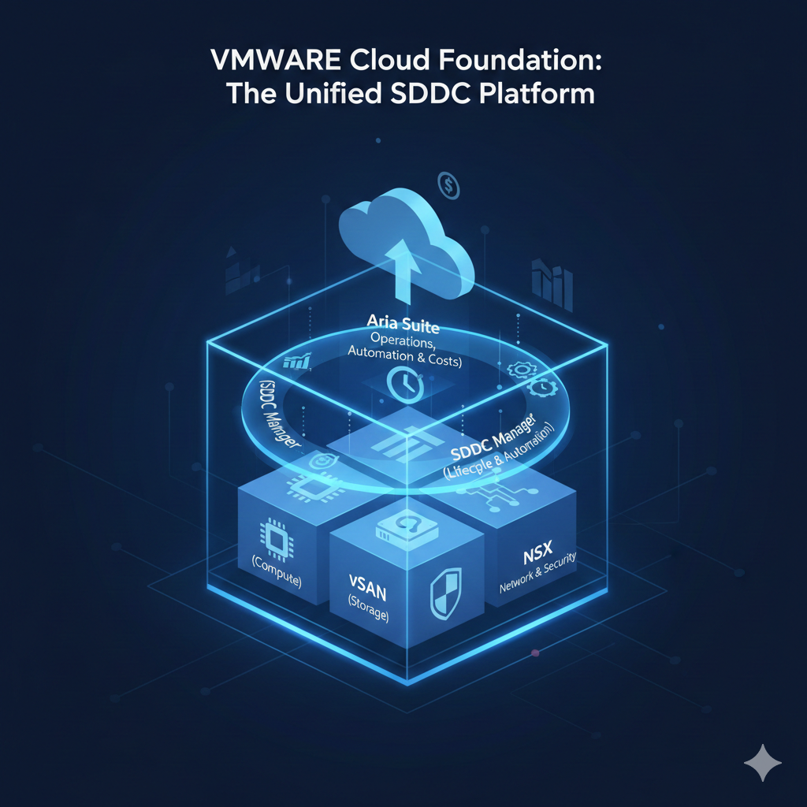
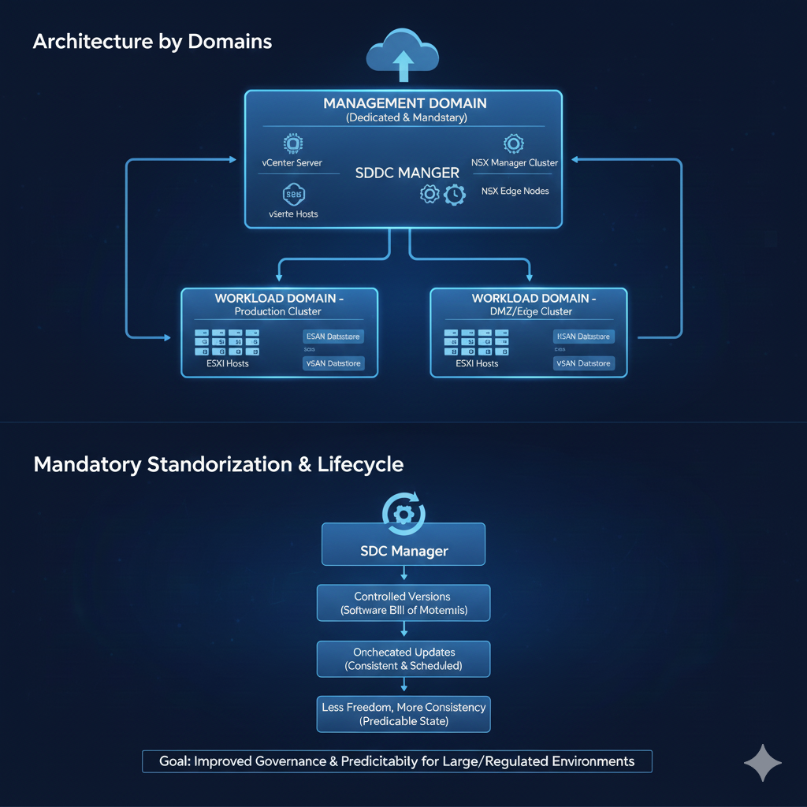
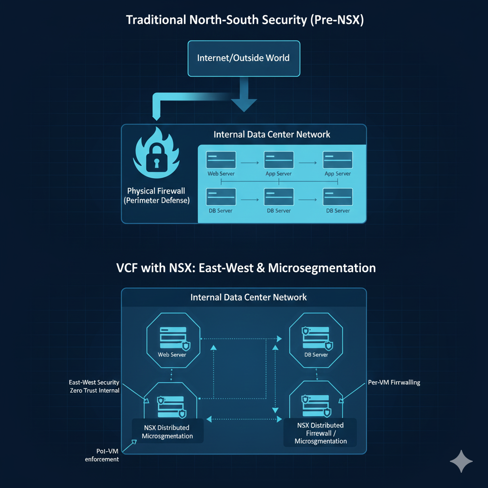
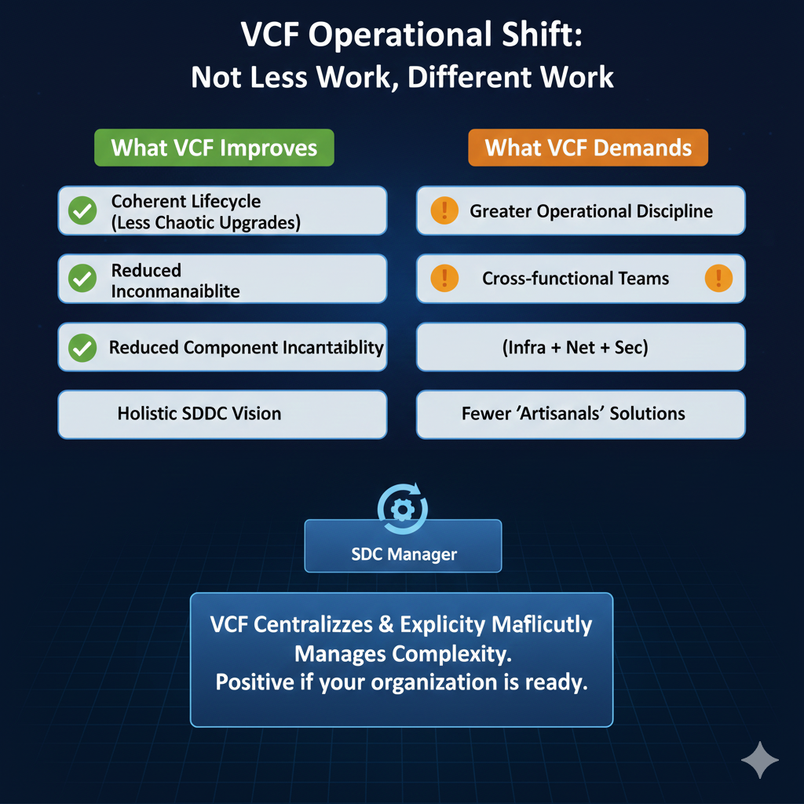

VMware Cloud Foundation como Plataforma Estratégica Única

Introducción
Desde la adquisición de VMware por Broadcom, el mensaje estratégico ha sido claro y consistente: VMware Cloud Foundation (VCF) ya no es una opción más del portafolio, sino el núcleo de la plataforma.
En 2024 y lo que va de 2025, esta definición ha generado preguntas críticas en clientes y partners:
- ¿VCF es realmente obligatorio?
- ¿Qué cambia a nivel arquitectónico y operativo?
- ¿Cómo impacta el nuevo modelo de licenciamiento?
- ¿Tiene sentido VCF para todos los entornos?
Este artículo busca responder esas preguntas desde una perspectiva práctica y técnica, separando el ruido comercial de las decisiones reales que deben tomar las organizaciones.
1. ¿Qué es VMware Cloud Foundation hoy (y qué ya no es)?
VCF no es solo un bundle de productos. Es una plataforma SDDC integrada y gestionada como una unidad, compuesta obligatoriamente por:
- vSphere — cómputo
- vSAN — almacenamiento definido por software
- NSX — red y seguridad
- SDDC Manager — lifecycle y automatización
- Aria Suite — operación, automatización y costos, según edición
En la era pre-Broadcom, muchos clientes utilizaban estos componentes de forma parcial o desacoplada. Hoy, VMware impulsa un modelo donde VCF es el producto, no la suma de piezas.
Si estás diseñando o renovando infraestructura VMware en 2024–2025, el punto de partida ya no es “vSphere + algo”, sino: “¿cómo encaja VCF en mi estrategia?”
2. Arquitectura de VCF: lo que debes aceptar antes de adoptarlo
Adoptar VCF implica aceptar ciertas decisiones arquitectónicas no negociables, entre ellas:
a) Arquitectura por dominios
- Management Domain dedicado (no opcional)
- Workload Domains separados por función o criticidad
Esto mejora la gobernanza y el lifecycle, pero incrementa el footprint inicial.
b) Estandarización obligatoria
- Versiones controladas
- Actualizaciones orquestadas por SDDC Manager
- Menos libertad, más consistencia
Ideal para entornos grandes, regulados o críticos. Puede sentirse restrictivo para equipos acostumbrados a “tocar todo”.

c) NSX deja de ser opcional
Incluso si hoy solo lo utilizas para switching básico, NSX es parte estructural de VCF, lo que abre —y exige— una conversación seria sobre:
- Microsegmentación
- Seguridad Este-Oeste
- Zero Trust interno

3. Operación diaria: VCF no reduce trabajo, lo cambia
Uno de los mitos más comunes es que VCF “simplifica todo”. La realidad es más matizada:
Lo que sí mejora
- Lifecycle coherente (menos upgrades caóticos)
- Menos incompatibilidades entre componentes
- Visión integral del SDDC
Lo que exige
- Mayor disciplina operativa
- Equipos más transversales (infra + red + seguridad)
- Menos soluciones “artesanales”
VCF no reduce la complejidad, la centraliza y la hace explícita. Eso es positivo… si tu organización está preparada.

4. El impacto del nuevo modelo de licenciamiento
Este es, sin duda, el punto más sensible en 2024–2025.
Cambios clave:
- Licenciamiento por core
- Menos SKUs, más empaquetamiento
- Menos flexibilidad para comprar solo “lo mínimo”
Implicación real:
VCF beneficia a entornos consolidados y bien dimensionados, pero puede:
- Penalizar infraestructuras sobredimensionadas
- Forzar ejercicios de racionalización (¡necesarios!)
Antes de evaluar costos, optimiza tu footprint actual. VCF expone ineficiencias que antes pasaban desapercibidas.
5. ¿VCF es para todos? Respuesta honesta
VCF sí tiene mucho sentido si:
- Operas múltiples clusters o data centers
- Necesitas consistencia y compliance
- Tienes estrategia híbrida o multi-cloud
- Buscas estandarización a largo plazo
VCF puede no ser ideal si:
- Tu entorno es pequeño y estable
- No necesitas NSX ni vSAN avanzados
- Prefieres máxima flexibilidad táctica
- Estás evaluando salida parcial de VMware
En estos casos, una arquitectura vSphere “clásica” bien gobernada puede seguir siendo válida, al menos a corto plazo.
6. Mirando hacia adelante (2025+)
Todo indica que VMware:
- Seguirá invirtiendo principalmente en VCF
- Integrará más capacidades de Private AI
- Reforzará automatización y seguridad como diferenciadores
VCF es la apuesta de largo plazo, y las decisiones que se tomen hoy condicionarán los próximos 5–7 años de infraestructura.
Conclusión
VMware Cloud Foundation no es simplemente “el nuevo estándar de VMware”. Es un cambio de mentalidad: menos soluciones puntuales, más plataforma integral.
Adoptarlo sin entender sus implicaciones puede ser un error. Ignorarlo completamente, también.
La clave en 2024–2025 no es preguntarse “¿me gusta VCF?”, sino: